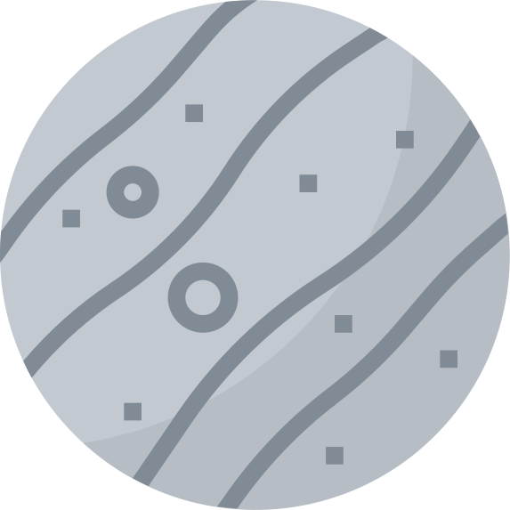

 Меркурий Первая планета от Солнца – это серого цвета Меркурий. Это небесное тело получило название от римского бога Меркурия (у греков – Гермеса), который покровительствовал торговле и путешественникам. От этого бога планета получила астрономический символ – крылатый шлем Меркурия с жезлом кадуцеем. В дневное время планета раскаляется до 430˚С, а в ночное охлаждается до -180˚С. Такой перепад температур возникает из-за сильной разреженности меркурианской атмосферы. В отличие от Земли, Меркурий не имеет спутников. Первая планета от Солнца покрыта кратерами и имеет необычайно крупное ядро, состоящее из железа, а также тонкую кору. Однако магнитное поле на этой планете в 10 раз слабее, чем земное. Движется вокруг небесного светила первая планета от Солнца по вытянутой орбите. Среднее расстояние от этой планеты до Солнца – 58 миллионов километров. Оборот вокруг нашей звезды этот космический объект делает за 88 суток. Таким образом, меркурианский год короткий – всего 88 дней. Зато день на Меркурии длится целых 176 суток. Сила притяжения на планете составляет треть от земной. Увидеть Меркурий можно без телескопа и других специальных приборов. Наблюдать его нужно перед восходом или непосредственно после захода Солнца. Зная, какая планета первая от Солнца, вам будет несложно запомнить, и какая планета Солнечной системы отличается наименьшими размерами: это также Меркурий. Первое место как самой крошечной планете нашей системы досталось Меркурию после того, как Плутон был признан карликовой планетой. Средний радиус Меркурия всего 2440 километров.